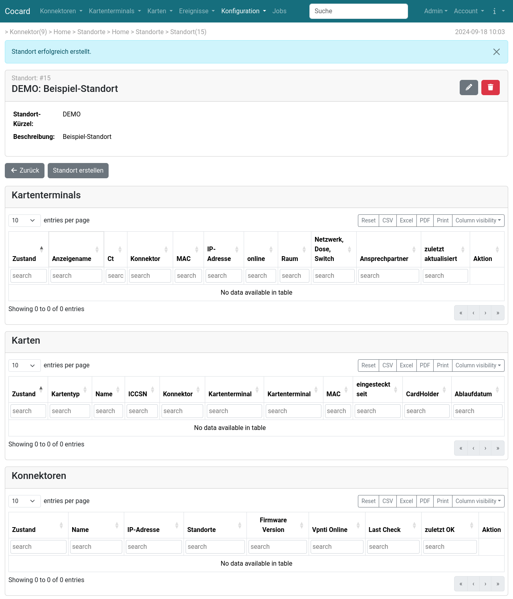

Standorte
Standorte sind als Zusatzinformation gedacht und komplett optional. Die Zuordnung von Konnektoren und Karten zu Standorten erfolgt manuell, die Zuordnung von Kartenterminals kann über die IP-Adresse automatisiert erfolgen, wenn ein passendes Netzwerk angelegt wurde.
Die Übersicht eines Standortes zeigt die verknüpften Objekte:
